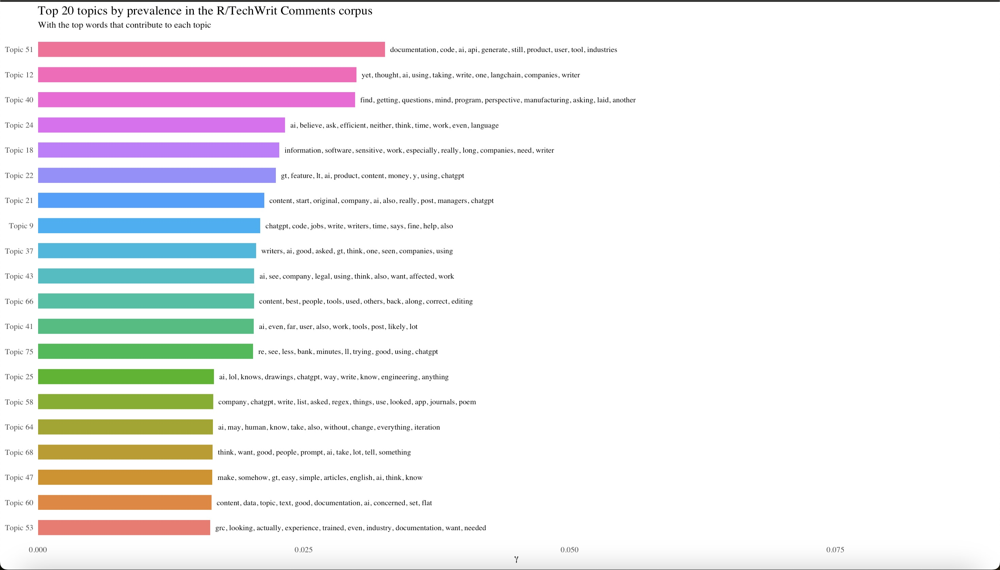

r/Technicalwriting Corpus
About r/technicalwriting
This is a subreddit with a little over 70,000 members. The subreddit is self-described as “For people who take the unbelievably complicated things that scientists and engineers devise and make it understandable for non-technical people.”
Initial Scrape (Unsuccessful)
I conducted an initial scrape of coments from r/technicalwriting with the Keyword “AI”, and the period set to “All”. 87 threads and 997 comments were collected from this scrape. Working with this particular dataset, I realized that I was not really getting any specific topics, a problem I traced to my keyword term. I had assumed that a subreddit on technical writing would automatically be talking about AI in the context of writing so I did not find it needful to use “writing” as a keyword. However, with the results I was getting, I realized my mistake. AI is a broad topic and conversations on AI could be about a lot of things other than writing and, Technical Writers, contrary to what the name of the occupation suggests do more than just writing.
```{r}
TW <- find_thread_urls(
subreddit = "technicalwriting",
keywords = "AI",
sort_by = "comments",
period = "All"
)
```Subsetting Initial Data With Grep
After I realized what had gone wrong with this data, I tried to create a subset of the data using the “grep” function.This was not easy because I could not even decide on which pattern of words to use as my research question itself is not the most specific. I tried to use words that express opnion like “helpful”, “bad”, “ethic”, “good”, among others but it was just not working so I decided to put this data set aside and go in for another scrape.
```{r}
TWsubset <- grep(pattern = "use AI|influence|view|opinion|useful|bad|ethic|helpful", CommentsTM$comment, value = TRUE)
View(TWsubset)
```Second Scrape (Successful)
For the second scrape I used “AI” and “Writing” as my keywords and set the period set to “Year” which produced 36 threads and 540 comments. Also, I conducted my analysis with only comments not threads as that is where I could find different perspectives on the topic. Next, I conducted a first cleaning of the data to retain just the comments, comment_id, and url columns but i ended up only needing the comments column. I initially planned to bind the comments from both subreddits but I did not so I did not really need the url column as well. With my data cleaned up, I saved it out as a CSV file, read it into a different Rscript, processed the data and run another topic model analysis. Once again,the topics were not really meaningful and certain irrelevant words like modal verbs were dominating the topics, indicating to me that I still had to clean up the data some more. Below is a visual of the said topics.
 Code used for scraping, cleaning and saving comments from r/technicalwriting
Code used for scraping, cleaning and saving comments from r/technicalwriting
```{r}
##Scrape threads and extract comments
TW <- find_thread_urls(
subreddit = "technicalwriting",
keywords = "AI,writing",
sort_by = "comments",
period = "year"
)
glimpse(TW)
TW_comments <- get_thread_content(
TW$url
)
##Clean comments data to retain relevant columns
TWcleam_select <- TWclean1$comments %>%
select(comment, comment_id, url)
glimpse(TWcleam_select)
##Save comments as a CSV file
write.csv(TWcleam_select, "data_out/TWcleam_select.csv")
save(TWcleam_select, file = "data_out/TWcleam_select.RData")
```Manual Reading and Exclusion of Irrelevant Rows
With the realization that I was not getting specific and meaningful topics from the r/technicalwriting comments, I went in and read the comments manually and noted the rows of comments that had wandered too far from conversations on AI and writing. Next, with the help of ChatGPT, I wrote a code that excluded those irrelevant rows. In all, I excluded 284 rows of comments from the 540 comments I generated from the second scrape.
```{r}
CommentsTM <- read_csv("data_out/TWcleam_select.csv")
glimpse(CommentsTM)
rows_to_exclude <- c(2, 3, 8, 21, 27, 28, 29, 31, 36, 58, 59, 60, 62, 65, 66, 67, 68, 74, 73, 75, 76, 77, 78, 79, 80, 83, 84, 86, 87, 88, 90, 91, 92, 93, 94, 95, 96, 97, 98, 102, 103, 104, 105, 106, 107, 108, 109, 110, 111, 112, 113, 114, 115, 116, 117, 118, 119, 120, 121, 122, 123, 124, 125, 126, 127, 128, 129, 130, 131, 132, 133, 134, 135, 136, 137, 138, 139, 140, 141:233, 262, 271, 274, 276, 278, 280, 289:314, 421:485, 538, 537, 536, 533, 527, 526, 525, 524, 523, 521, 520, 516, 511, 512, 508, 504)
# Exclude specific row numbers
CommentsTM <- CommentsTM[-rows_to_exclude, ]
```Preprocessing and Topic Modeling
After excluding those rows, I continued processing the data for topic modeling. This preprocessing included creating a corpus of the comments, tokenizing the corpus, removing stopwords, sparsing the tokens, and creating a document feature matrix of the tokens. I also excluded the irrelevant topwords, which included the modal verbs I mentioned earlier, so that they would not dominate the topics.
```{r}
### Create a corpus object from the "comments" column
commentcorpus <- corpus(CommentsTM, text_field = "comment")
# Create a tokens object (punctuations, stopwords, and irrelevant topwords removed)
commenttokens <- tokens(commentcorpus, remove_punct = TRUE,remove_url = TRUE) %>%
tokens_select(pattern = stopwords("en"), selection = "remove")%>%
tokens_select(pattern = c("can", "like", "just", "will", "t", "s", "m", "thanks", "don", "comment", "thank", "ux", "certification", "certificate", "tw", "technical", "tech", "job","get", "writing", "deleted"), selection = "remove")
#We'll create the dfm.
dfm_commenttoks <- dfm(commenttokens) %>%
dfm_trim(min_docfreq = 0.0001,
max_docfreq = 0.99, docfreq_type = "prop",
verbose = TRUE)
topfeatures(dfm_commenttoks, n = 20, scheme = "docfreq")
### Convert dfm to stm
dfm_stmcomments <- convert(dfm_commenttoks, to = "stm", omit_empty = TRUE)
```Choosing K for Topic Modeling
I tried using Julia Silge’s code for modeling K to find the K value with the highest exclusivity and semantic coherence but try as I did, I just could not get it to work. So, I randomly run my topic model with the K value set at 40, 50, 60, 70 , 80 and even 100. I realized that the topics were not very meaningful at the lowest (40 and 50) and the highest (100) values. However, the topics at K= 60 and 80 also looked almost but not completely meaningful so I chose to go with a number that fell between these two, 70, and it worked. The topics at k=70 made sense and were also interesting to me so I decided to go with that. Below are visuals of the topics from the different K values.
K=40

K=70

K=80

Interpreting Topics
I interpreted the topics generated in the topic model by considering the highest probability words and the FREX. My interpretation of the topics was also influenced by my familiarity with some of the themes in the data. Through my manual reading of the data, I mentally noted some themes that were emerging for me so it was quite easy for me to identify those themes I had already noted when reading the topics generated by the Topic Model. I am going to use Topic 58 from the topic model as an example.
Topic 58
Highest Prob: company, ai, policy, chatgpt, legal, asked, document, made, issues, regex, decisions, list, write, work, sure
FREX: policy, regex, legal, decisions, company, issues, affected, app, emergency, journals, ndas, asked, list, copyright, poem
With this topic, words like “policy”, “ai”, and “company” made it easy for me to come to the basic conclusion that the topic was on company policies around technical writers’ use of AI. I then went into the corpus and searched “company policies” and from the conversations, I got the added layer of understanding that this topic is about AI policies of companies and how those policies are shaped by possible legal and copyright implications. My interpretation of all the other topics followed this same process.
Topics of Interest and My Interpretation of Them
Topic 51- Non-technical writers (Developers) are generating documentation on their own
Highest Prob: documentation, ai, code, api, generate, product, user, tool, devs, ask, think, manual, training, software, questions
FREX: devs, api, documentation, longer, explanations, ingest, jeopardy, watson, granted, code, generate, developers, manual, tool, parse
Topic 58- Company policies on AI and the legal implications of AI use
Highest Prob: company, ai, policy, chatgpt, legal, asked, document, made, issues, regex, decisions, list, write, work, sure
FREX: policy, regex, legal, decisions, company, issues, affected, app, emergency, journals, ndas, asked, list, copyright, poem
Topic 59- Top Words: Job security concerns
Highest Prob: replace, ai, writers, security, robots, take, need, still, said, thing, see, capable, tool, give, next
FREX: robots, replace, security, capable, redundant, ^, whole, laid, thing, next, managers, making, tool, industries, writers